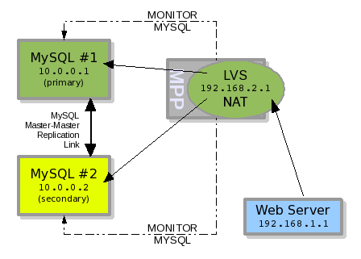
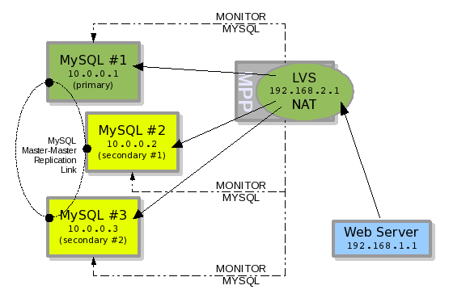
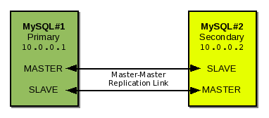
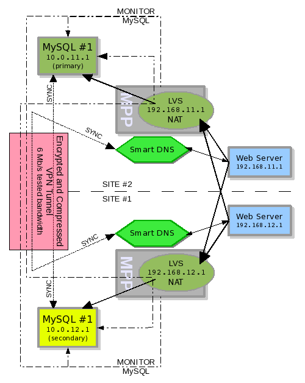
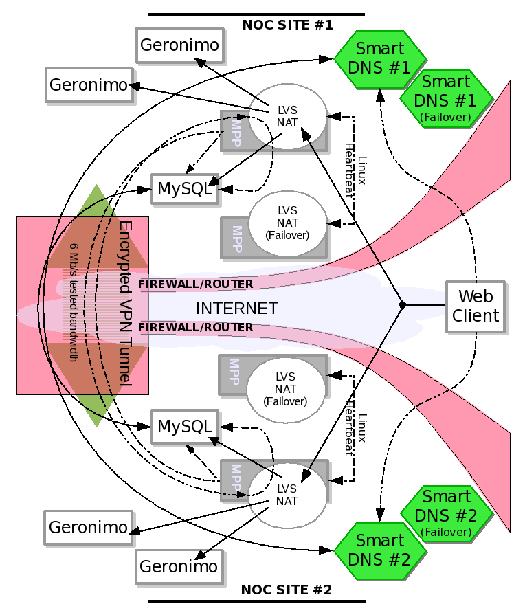

By Russell E Glaue
So let's now go back to the first failover example in part 1 that used Heartbeat, and replace it with LVS (Linux Virtual Server) and MPP. We can see this new configuration in illustration #1.
We have the same two nodes, MySQL#1 and MySQL#2, with the same server IP numbers, 10.0.0.1 and 10.0.0.2 respectively. The replication link is still present but as a Master-Master replication. The difference is that the MySQL Server IP number 192.168.2.1 has moved to the server LVS is installed on rather than be configured on the individual nodes as done with Heartbeat. And the same web server in the previous Heartbeat example now accesses MySQL through the LVS.
The MPP software polls the two MySQL server nodes checking connectivity and replication status. Based on the configuration provided and the resulting status of each pool member node, MPP will determine which of the two server nodes should be the ACTIVE MySQL server node, and which one remains as STANDBY.

Illustration 1: MPP+LVS managing a pool of MySQL nodes
In illustration #1 the PRIMARY and SECONDARY server nodes may both be in a true positive online state, but the MPP failover logic is configured to only allow one ACTIVE server node in a pool at any given time. The PRIMARY server node has higher priority in this failover configuration, so it is labeled as ACTIVE and the SECONDARY server node is thus labeled as STANDBY.
For the LVS virtual servers, we write a specific health monitor check script that reports an UP or DOWN for each server node based on the STATE and STATUS MPP is maintaining for it.
Let's say LVS is configured for one read-write virtual server. When LVS checks with MPP to see which of the two server nodes should be in its list of available real servers, MPP reports back to LVS via the health monitor check script that only the ACTIVE server node is online (positive). The SECONDARY server node is reported to LVS as offline (negative) even though it is technically online. The MPP health monitor check script used by LVS is written to report only ACTIVE MySQL server nodes as UP.
If LVS was configured to have one read-only virtual server, then the MPP health monitor check script used by LVS for that virtual server would report only STANDBY MySQL server nodes as UP. So in a read-only virtual server the ACTIVE server node is reported as offline and the STANDBY server node is reported as online.
Only MPP maintains the true online or offline status of the real servers, hiding this from LVS. LVS only needs to know if the server node should or should not be in the list of available real servers responding to requests. And MPP health monitor check script only reports to LVS yes the node is UP or no the node is DOWN. And a different health monitor check script is specifically written for the different LVS virtual servers.
Should the PRIMARY server node fail, MPP will change its state to FAIL and then promote the SECONDARY server node from STANDBY to ACTIVE. Then in this scenario, the next time LVS requests which server nodes should be in the list of available real servers for the read-write virtual server, the MPP health monitor check script reports back that the PRIMARY server node is offline (negative) and the SECONDARY server node is online (positive). Thus the SECONDARY server node is the only server node in the list of available real servers responding to read-write requests.
If a failover like this occurs as in the example, and the only STANDBY server node is promoted to ACTIVE, then we no longer have any STANDBY server nodes to serve read-only requests. The PRIMARY server failed and now is known as FAIL. So in this case if we do not want the application to be aware of the failover and still use the read-only virtual server, we will have to rewrite the MPP health monitor check script used by the read-only virtual server to report the ACTIVE server as online or UP for it. We would do this by writing: If MPP reports there are server nodes with STATE of STANDBY and STATUS of OK, report the STANDBY server node as UP and ACTIVE server node as DOWN, else if MPP reports there are no server nodes with STATE of STANDBY report the the ACTIVE server node as UP.
The previous example deployed LVS+MPP in place of Heartbeat to create a 2-node MySQL failover scenario. Now let's modify that example and add a third node, MySQL#3.
MySQL#3 is added into the Master-Master Replication Link between MySQL servers. And then added into the pool of MySQL server nodes monitored by MPP. LVS is configured to handle MySQL#3 in the pool for the 192.168.2.1 IP number, and queries MPP for the node's STATUS. MySQL#3 remains in the STATE of STANDBY with MYSQL#2. MYSQL#1 is in a STATE of ACTIVE.

Illustration 2: 3 node MySQL failover pool
Now let's assume the Master-Master replication link forming a ring in this example replicates from MySQL#1 to MySQL#2 to MySQL#3 and back to MySQL#1. Should MySQL#1 have a hardware failure, MySQL#2 will take over as ACTIVE. The replication ring is now broken, but MySQL#3 should still be receiving updates from MySQL#2 which is its master.
At this point we can change the master of MySQL#2 to MySQL#3 to create a 2-node replication ring, or repair and bring MySQL#1 back online. Even if we do neither, and then MySQL#2 has a hardware failure too, MySQL#3 will be brought online as ACTIVE since the replication between MySQL#2 and MySQL#3 was not broken. However, in the later case, to repair our MySQL failover pool, we must bring MySQL#1 and MySQL#2 back online at the same general time to recreate the replication ring and bring them back up to date.
This 3-node failover pool is possible but probably undesirable due to the complexity of maintaining the pool. Rather than create a 3-node failover pool, it is better to invest in two servers to host MySQL which have redundant power supplies, hard drives, CPU, etc.. However, the situation dictates the need.
It should be noted that the Heartbeat software version 2 now supports more than two nodes in a high-availability failover configuration. A 3-node failover scenario similar to the 2-node scenario in the Heartbeat example in part 1 could be achieved with Heartbeat version 2.
MPP monitors the internals of the MySQL server daemon processes running on each server node identified in a MPP pool. It will connect to each of these server nodes and not only ensure a connection and query is possible, but that the replication between the slave server node and its master is good. Once this criteria is collected, the logic is processed with this collected data to determine the STATUS and STATE of the MySQL server node as it participates in the MPP pool.
As of the initial public release of MPP there is not yet a graphical interface. One must use command line execution for viewing and managing an MPP configuration. In illustration #3 we can see the output of a happy failover configuration. Both MySQL servers are online and responding in good health.
There are three* sections to the output when viewing MySQL pool status information. At the top is the column header, labeling each column of data. The second line is the pool identification and pool status**. And the remaining lines are the list of server nodes in the MySQL pool with data that falls under the defined columns.

|
* There is a fourth section for real server checkpoints. It is mainly used in a global colocation deployment covered in a later section.
** The status of the pool which is seen on the second line in the illustration to the right of the pool name will be explained in a later section. It is used in conjunction with server checkpoints used to determine the status of the local pool in a multi-site colocation deployment.
The labels from the columns of data are defined as follows:
T - The type of server this server node is configured as in this pool. Possibilities are:
PRIMARY - The main server node which should always be first. Only one PRIMARY server node is allowed
SECONDARY - A next-in-line server node should a higher priority server fail. The SECONDARY server nodes are listed in the output in order based on each server node's priority in the pool. A SECONDARY server listed lower on the list has less priority than a SECONDARY server higher on the list, and will only take over ACTIVE state should the PRIMARY and higher SECONDARY server nodes fail.
Server Name - The Name or IP number of the MySQL server node plus the port that the MySQL Daemon process is listening on. In most deployments, we want to identify each server node by IP number instead of hostname so that the monitoring process does not rely on DNS resolution. If we did use hostnames instead of IP numbers and the DNS server became unresponsive, the MPP software would put the server nodes into a STATUS of FAIL because they could not be reached due to the hostname not being resolvable to an IP number.
Req - The Number of
requests that have been made since the first request received an
error. When an error occurs, this number increments. Every time the
MPP software calls on the real server node to get data, and the data
evaluates as a negative, this number increases by one. And at the
point this number reaches the administrator-definable fail point
(default is 4 error requests) the MPP software puts the server node
into a STATUS of FAIL and enacts a failover to the next server node
in the pool with highest priority and a STATUS of OK.
Should the
data MPP retrieves from the server node evaluate as positive before
reaching the fail point, this number gets reset to 0.
Here is
the default configured status levels resulting from the given number
of error requests:
0 - OK
1 - OK INFO
2 - OK WARN
3 - OK CRITICAL
4 - FAIL
The administrator can change these
levels (Read the documentation that is distributed with MPP for
understanding of this). However this is the recommended and tested
method. With the default status levels, setting the interval between
polling (using cron to execute the polling process) server nodes to
1 minute will create a 4 minute time to failover. 4 minutes may be
longer than desired for a local failover pool, but might be more
ideal for a multi-site distributed failover pool. There is a plan to
improve failover time.
When a server node changes STATE in
the pool from STANDBY to ACTIVE or ACTIVE to STANDBY its request
number is incremented. Typically, the number is incremented from 0
to 1 because a STANDBY cannot become ACTIVE unless its STATUS is OK,
and a SECONDARY server node's STATUS is usually OK when
relinquishing ACTIVE STATE back to a recovered PRIMARY. By default
a request number equaling 1 changes a server node's status to "OK
INFO" which by design is intended for throwing an alert.
Most
self-healing issues with MySQL that are identified by MPP will
resolve before the next poll. Thus this is the theory behind an
error request of 1 putting a server node into a STATUS of "OK
INFO".
A few examples of self-healing issues are: the slave
process on a server node falls behind the master and needs to get
caught up, or a delay in a network connection causes MPP's MySQL
connection to time-out. You may only see the second example of a
temporary connection time-out in a global colocation deployment.
More self-healing examples are given in part 1 of this article.
Time of Last Request - This is the time when MPP last polled the server node to discover data for evaluating the server node' STATUS as positive or negative. This string is formatted as "YYYY-MM-DD hh:mm:ss".
Status - As mentioned earlier, this is the current STATUS of the server node. This status will change based on the number of errored requests MPP receives for the node. If there are no errored requests, the STATUS will remain as "OK". If the total number of allowed requests is met (default is 4) then the STATUS will be "FAIL". Here is the default list of possible statuses:
0 - OK - no errors with server node
1 - OK INFO – The server node has just been identified with an error or is in the midst of changing its STATE.
2 - OK WARN - Something is wrong with the server node, it did not self-heal itself. Need to keep an eye on this server node in case it gets worse and escalates to the next STATUS level.
3 - OK CRITICAL - The problem is fatal and the server node is about to fail.
4 - FAIL - The server node has failed. If the server node is ACTIVE, then bring the next STANDBY server node online as ACTIVE in its place. There is a future plan to allow MPP to be configured to enact a failover at an administrator defined STATUS level other than FAIL.
If you want notification of when the STATUS escalates, MPP has been designed to be tied in to Nagios. Nagios is a monitoring application which can be used to monitor the status of MPP Pools and send alerts by email or pager when a nodes STATE or STATUS changes.
State - This is the STATE in which the server node is currently in. The state of server nodes is evaluated by the MPP logic module. If we configure a MPP pool as a failover pool (The only option as of the initial public release) then MPP uses the failover logic. If we configure a MPP pool as a cluster pool (not yet available as of the initial public release) then MPP will use the cluster logic.
failover pool logic - With this logic, a MPP pool can only have one server node with a STATE of ACTIVE. All other server nodes will have a STATE of STANDBY. The logic orders the STANDBY server nodes into a priority list, and takeover of ACTIVE STATE occurs with the highest priority STANDBY server node. Concerning when the PRIMARY server node has failed, and is being recovered, in a failover pool configuration, we can configure an additional option of "hostile take over". When this option is true, the PRIMARY server node will immediately take control as ACTIVE when it is recovered. If "hostile take over" is false, the PRIMARY server will wait for the currently ACTIVE server to change STATE to STANDBY before taking over as ACTIVE. By default "hostile take over" is false because it is the safest method. However this method causes a period of when there is no ACTIVE server node for a time period equal to the poll interval period. Example: Considering that the poll interval is 1 minute. If the PRIMARY server node is recovered to STATUS of OK, the PRIMARY server node will notice a SECONDARY server node is currently ACTIVE and will wait on STANDBY for another polling iteration for it to step down. In the same interval, the current ACTIVE server node will discover that the PRIMARY server node has recovered and will step down to STANDBY. So for the interval of one poll iteration, there will be no ACTIVE server. On the other hand, if "hostile take over" is true, the PRIMARY server node never checks to see if there is an ACTIVE server node. It just becomes ACTIVE. But in the same interval, the SECONDARY server which was ACTIVE will also step down to STANDBY. This may seem better, however there is a chance that the external LVS clustering technology may place both server nodes in the list of active real servers. And technically this is not a problem either because if the SECONDARY server node gets out of sync with the PRIMARY server node, MPP will change the SECONDARY server node's STATUS to FAIL anyway. "hostile take over" is considered okay to use, just not well enough tested for those that are paranoid. The choice to use this option is up to the adminitrator.
cluster pool logic
- This logic for creating a pool is not available yet as of the
initial public release.
This option will allow for multiple
ACTIVE servers nodes in a single MPP pool.
The possible states a real server can become is as follows:
ACTIVE - The server node is the one responding to requests
STANDBY - The server node is waiting to take over as ACTIVE should the currently ACTIVE server node FAIL.
FAIL_ONLINE - The server node has failed, but is still online and reachable. This might be the result of a non-primary server's replication getting out of sync with its master. Also the server could have failed offline and then came back online thus changing states from FAIL_OFFLINE to FAIL_ONLINE.
FAIL_OFFLINE - The server node has failed and is offline. Perhaps the server was shutdown or it crashed.
UNKNOWN - The server node is in a STATE that is
unknown. This is seen when a MPP pool is initialized and the server
nodes in that pool have not been evaluated yet. Once evaluated, the
server node will change its STATE from UNKNOWN to one of the other
four possible states above.
A server cannot go from a STATE of
UNKNOWN to ACTIVE unless it is the PRIMARY server node and the
"hostile take over" option is true. Otherwise a server
node must change its STATE from UNKNOWN to STANDBY and then to
ACTIVE.
The examples we have seen thus far are solutions that can be deployed at a single site to create a high availability MySQL failover pool. However, the purpose of having a failover strategy is to eliminate the single point of failure. But with these solutions, if there is only one ISP providing the Internet connection, the ISP becomes a single point of failure. Also, deploying a replica NOC in a colocation is usually desirable for disaster recovery (Should the primary site be hit by a Tornado, for example).
Because of this reason and others including: failure due to fire, disaster planning, higher-availability through operating multiple NOC (Network Operation Center) sites, five-nines uptime (99.999%) organizations deploy redundant technology in off-site locations. In this next example we are looking at how MPP can help us to create a global failover pool. In a global failover pool, MySQL servers are deployed in two geographically separated locations and are configured into a failover strategy.
As of the initial public release, two deployments of MPP are not able to talk to each other. This is planned to be addressed in the future. Due to this fact, this limits the type of configuration in which MPP can be deployed in two instances geographically. First the LVS read-write virtual server at each site maintains all server nodes in its list of available real servers which report a STATUS of OK, rather than STATE of ACTIVE. The deployment configuration in the following example has each MPP instance monitoring the local MySQL server node directly, but the remote MySQL server node through LVS+MPP. In this way, if the remote MySQL server does not fail but the LVS does, thus causing the MySQL server to be unreachable, then the MPP in the local colocation can trigger a failover. Additionally should the remote MPP trigger a failover, the local MPP instance will not be able to connect to the remote MySQL server and thus failover as well.
The Smart DNS will check with MPP to see which site has their local server node as STATE of ACTIVE, and give out the IP for that site. In this way we are creating another virtual server, or a virtual server of virtual servers. I refer to this configuration as a global virtual server as it maintains virtual servers as nodes in multiple networks.
Ideally, as proven in most of my field tests, the ACTIVE MySQL server will fail and both MPP instances will failover together within less than a minute of each other (If the poll interval is set to 1 minute via cron). The other possibility is that the remote side loses its connection to the Internet due to an ISP or router failure and the local MPP instance will then failover. The remote MPP instance on the failed colocation site should have failed checkpoints and thus will change the STATUS of its pool configuration (Pool Status) to FAIL so that should the Internet connection recover, the failover will continue. Pool STATUS of OK/FAIL, which is determined by checkpoints, will be covered later.

Illustration 4: LVS+MPP deployed for a geographical failover pool
Looking at the example deployment configuration
in illustration #4, two deployments of LVS+MPP now exist. Each
deployment manages 1 MySQL server node, but monitors both. The MySQL
servers are configured in a Master-Master deployment. The replication
link is over an encrypted 6Mb* per second VPN connection.
Communication from MPP to the MySQL servers nodes is also over an
encrypted VPN connection. An Encrypted VPN is necessary to protect
the data in the database from intruders. The ipsec software including
openswan can be used to implement a no-cost software deployment on
Fedora Core 7 (For further install details, perform on your FC7
install yum search ipsec).
* 6Mb/s is the connection speed in which this scenario has been successfully tested at with moderate to high traffic. It is possible this scenario could work with a 3Mb/s connection. However, before deploying, it should be determined how much bandwidth is needed between connections. And it must be considered how much data will be replicated. The VPN connection must be set according to the need.
So in a colocation deployment like this one with two MPP instances that cannot talk to each other, the configuration must be one MySQL server in each location controlled by one LVS server with an MPP instance. The MPP instance has one pool containing the local MySQL server node and the remote MySQL server node through LVS. The LVS server will only have the local MySQL server configured for its available real server list. Again, MPP keeps track of the real pool, LVS only needs to know what real servers it controls and which one is up or down. So for this example the Site #2 MPP instance has a pool of two servers nodes 10.0.11.1:3306 and 192.168.12.1:3306, while the Site #1 MPP instance has a pool of two servers nodes 192.168.11.1:3306 and 10.0.12.2:3306.
With this scenario, the main failover mechanism moves from LVS to the Smart DNS (like the F5 Big IP 3DNS). The reason is because we are using multiple IP numbers for a single failover instance (One IP for each site or NOC). LVS becomes a secondary and also fail-safe mechanism, but now only monitors if the MySQL real server it is monitoring is OK or FAIL, instead of ACTIVE on not ACTIVE as before. MPP is still the evaluation tool for managing the failover configuration. The Smart DNS must be configured to give out one of the two site's IP number based on an evaluation of the two MPP instances to determine which site has the ACTIVE MySQL server node.
The F5 Big IP is a Smart DNS server. Its features and capabilities will not be described here except for the feature we use in this scenario. For more information on this product, visit http://www.f5.com. The feature used in this example is Smart DNS load balancing in a WideIP configuration. Alternately Eddie DNS (http://eddie.sourceforge.net) could possibly be used, however no tested for this scenario.
MPP is deployed on the LVS server as the failover mechanism for LVS as well as the F5 BigIP. The F5 BigIP will maintain a pool configuration of two IP numbers which in this scenario are 192.168.11.1 and 192.168.12.1. It will use a checking mechanism (known to F5 as ECV) which can query a URL on each IP in its pool. Since the IPs are on the LVS, and MPP is also on the LVS, we use the CGI capabilities of MPP under Apache to execute MPP's built in REST Web Service. Alternately, one can write a CGI application which queries MPP and formats the output F5 BigIP receives. The same kind of script can be written to query MPP and send required information to Eddie DNS for it to determine how to give out IP numbers.
F5 BigIP has two methods we can use to configure a failover. One based on reachability, which if the IP is reachable and responds then the F5 BigIP considers it UP. And one based on the ECV check, which the result of the ECV check tells F5 BigIP that the IP should be UP or DOWN.
In our scenario example here, we will use the ECV because we want all traffic sent to the ACTIVE MySQL server node. Each MySQL server will be responding on the IP maintained by its local LVS so that MPP on the remote side can monitor it. So if we configured the nodes for reachability, F5 BigIP would report the MySQL server nodes at both colocation sites as UP.
As described above, MPP is configured to monitor the MySQL server on the local as well as the remote colocation sites. LVS only monitors the local MySQL real server via MPP, and it now is configured to put the MySQL server node in the list of available real servers if MPP reports the MySQL STATUS as "OK". This is different from our other deployment scenarios where LVS was only adding the MySQL servers to this list if its STATE was "ACTIVE". With this configuration, we have a MySQL server responding to the IP on the LVS in each colocation. This is not dangerous, because if the SECONDARY server gets out of sync with the PRIMARY, MPP will change its STATUS to "FAIL" causing LVS to take it out of the list of available real servers thus making that IP unresponsive. F5 BigIP Smart DNS now monitors each MySQL server through the LVS+MPP for STATE of "ACTIVE". If the STATE is "ACTIVE" for a MySQL server, then the IP on the LVS managing the ACTIVE MySQL server is given out by F5 BigIP as the IP for the MySQL connectivity. This means our MySQL domain, say mysql.eraser.com, resolves to the IP of the ACTIVE MySQL server. Thus in this scenario, when the Web Server queries the F5 BigIP for the IP number of the MySQL server mysql.domain.com, it is given the IP number 192.168.11.1. Should the primary MySQL server fail, LVS will shut off access to it by this IP number and F5 BigIP will then start resolving mysql.eraser.com to the IP number of 192.168.12.1 - Looks like it will work... right?? Let's move on...
So this is all fine and dandy. Looks like we got a real global software failover strategy for MySQL. But a problem still lays at the global deployment. What if the two sites, or MPP instances on LVS, are cut off from each other. Say the router at Site #2 starts receiving a DOS attack and no traffic is getting in or out of it. Yet the router is still technically up and responding to pings on an internal interface. What happens now?
In the configuration, we have configured thus far, both MPP instances would see the remote MySQL server as down. Site #2 MPP would fail the SECONDARY server node, and Site #1 MPP would fail the PRIMARY server node and enact a failover to the SECONDARY server node. Should the DOS attack stop, we now have two ACTIVE MySQL servers in each location. Right away we find this is very bad. Since the PRIMARY server is in a STATE of "FAIL" at site #1, the Site #1 MPP does not care if the SECONDARY server is out of sync with the PRIMARY server. As the ACTIVE node in a pool, broken replication does not matter. It is up the the other nodes to get in sync with it.
Never fear though, this case has been accounted for by the use of a method called checkpoints. You configure various checkpoints for the MPP pool at Site #2 like external:http:www.google.com:default, external:http:www.yahoo.com:default, edge:simple:router.site2.eraser.com:default, and internal:simple:internalserver.site2.eraser.com:default. Should all of these checkpoints fail, Site #2 MPP will consider its MPP pool to be FAIL because its connection to the outside world has gone down. Site #2 MPP assumes that Site #1 MPP will perform a failover. The Site #2 MPP will see that its external checkpoints are OK, and will perform a failover.
|
So, now, does it look like it will work? In real-world field tests it works with various non-serious and non-fatal issues that are not regular occurrences. Some of these issues being Site #2 looses connectivity for 5 minutes to Site #1, thus failing the SECONDARY MySQL server node, or vise-versa. We find out someone at the ISP accidentally pulled our network connection. You just have to be monitoring the MPP pools and maintain them.
Once MPP is further advanced to communicate with other instances, and options like self-recovery is finalized, issues like this will be less of an annoyance. It is recommended to tie the MPP instances into a monitoring system like Nagios so we can be kept alert of how MPP is managing the failover strategy. If you do not want to use Nagios, at the very least you can write some shell scripts to run in cron and e-mail or page you alerts if the STATE and STATUS of MySQL servers in the MPP pools change.

MPP is attempting to provide an intelligent software failover solution for MySQL. And it really is intended to be a software failover solution. Even in the future when MySQL Clustering becomes more of a stable technology solution, It is expected that MPP will still have its place. The power of MPP is its plugability into existing load-balancing mechanisms. This allows the powerful leverage of all load-balancing solutions teamed with intelligent state management through MPP. The initial public release was intended as mostly a stable functional proof-of-concept version, and still has a lot to be hoping for. The future intention is to mostly get multiple MPP instances working together intelligently. With this, MPP instances can negotiate with remote sites what servers should be UP or DOWN in a global virtual server and ensure a better guarantee in the failover process, not to mention to allow auto-recovery in a multiple MPP instance installation.
It is also with great hope that I can enable MPP to work with MySQL Proxy. LVS is a working solution. But MySQL Proxy should be able to handle the actual server node STATE changes more intelligently, including enabling secondary STANDBY MySQL server nodes to service read-only SQL queries without additional virtual servers. MPP can be used to tell MySQL Proxy which secondary STANDY MySQL servers are in full replication.
The plan is to publish a Part 3 to this article demonstrating MySQLProxy+MPP.
So what is the immediate todo list?
Integrate MPP with MySQL Proxy
More easily usable API (needs to be polished)
More pluggable brain center so new logic can be easily integrated
Communication between multiple MPP deployments
Tried and proven Auto/Self Recovery mechanisms for pool members
It is with great hope that MPP can be useful.
http://codepin.cait.org/project/mpp